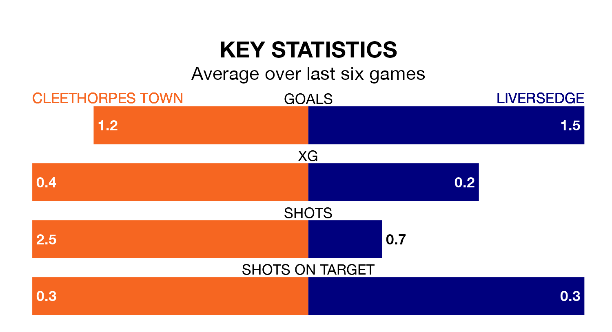

Two of the Northern Premier League Division One East's meanest defences go head-to-head at the Bradley Community Stadium on Saturday, when Cleethorpes Town host Liversedge.
Only two sides – Stockton Town FC and Dunston UTS – have conceded fewer goals than Cleethorpes to date: the home side have let in just 18 goals in 15 games.
Liversedge have conceded 19 goals in 15 games, giving them the joint-fourth tightest back line so far this season.
Cleethorpes are in bad form in the Northern Premier League Division One East, with no wins and three draws from their last six games.
With three wins and a draw over that period, Liversedge's form is much better – they have taken 10 points from 18, compared to Town's three.
The home side are 12th in the table after 15 games, of which they have won five and drawn five, earning 20 points.
The visitors are one place ahead of Cleethorpes in 11th, with seven wins and one draw putting them on 22 points.
Cleethorpes's last match was on December 16, a 2-2 draw against Grantham Town.
Liversedge drew 2-2 with Stocksbridge Park Steels last time out, on December 15.
Updated: 15:16, 21/12/23